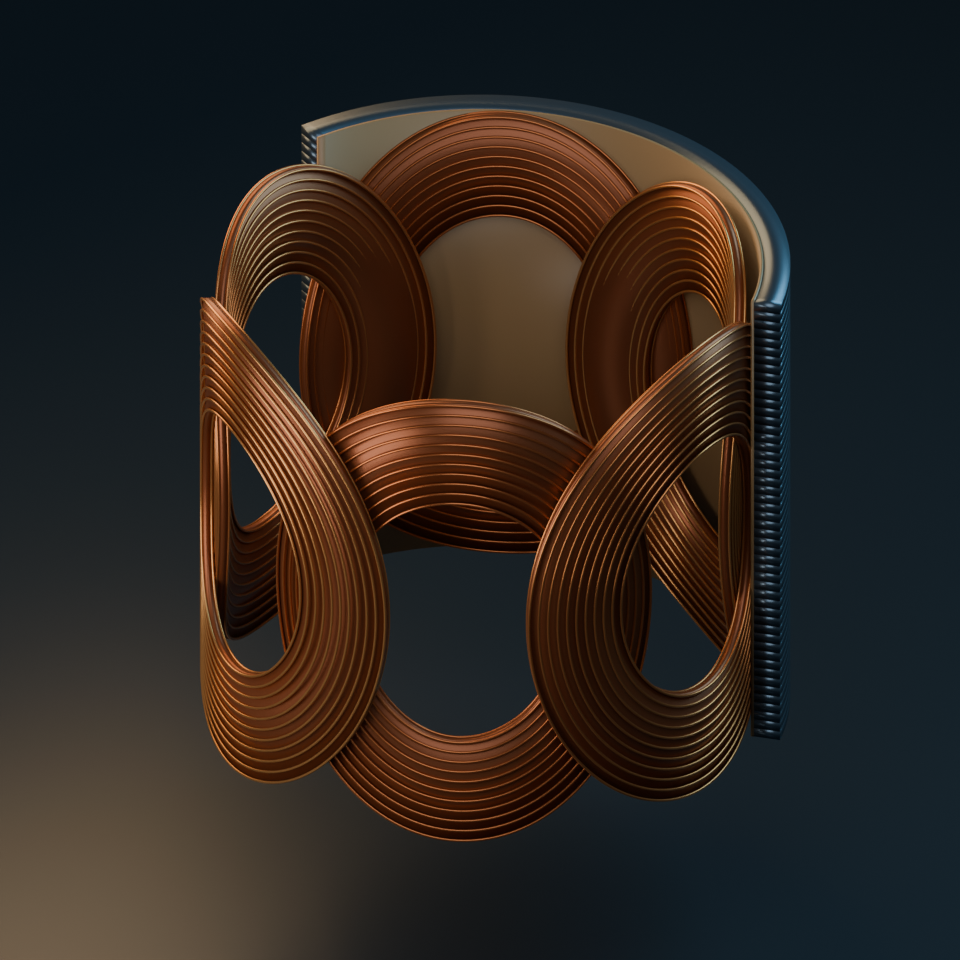
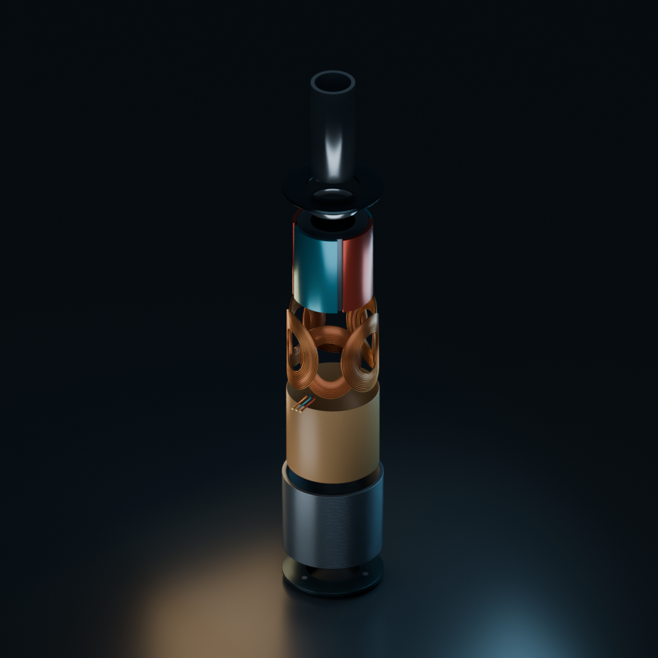

ROBOTICS / MOTOR DESIGN
Interactive design study for a 15 mm diameter miniature BLDC actuator. The current construction uses nested oval coils laid flat across the curved inside surface of a smooth cylindrical stator wall.


Download the project and follow the setup notes. The public page is static; Blender synchronization runs locally through the included workbench server and Blender bridge.